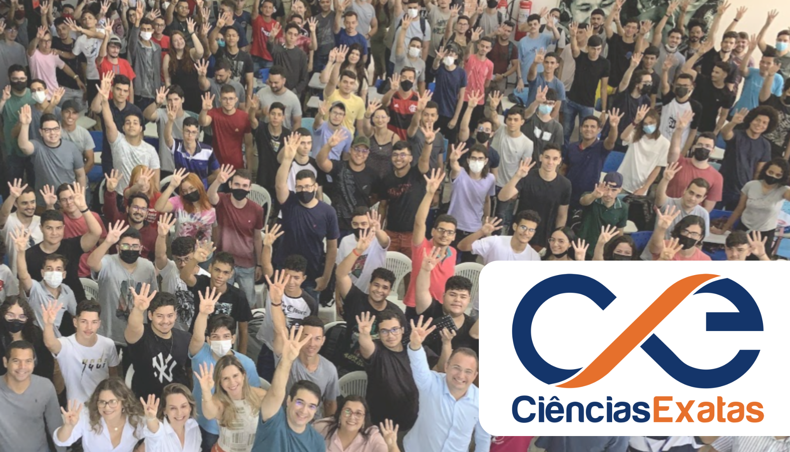

Concursos

Esta é a página para acompanhamento dos concursos do Departamento de Ciências Exatas (DCX), do Centro de Ciências Aplicadas e Educação (CCAE) - Campus IV da UPFB - Rio Tinto - PB.
-
Concursos ativos:
- Edital 17/2025 - Concursos para Linguagem de Programação e Infraestrutura e Redes
-
A página oficial do departamento é: https://www.ufpb.br/dcx